Pour pratiquer la pêche, il vous faudra aller dans: Echap > Informel > Pêche.
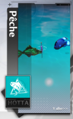
Il vous faudra avant tout, une canne à pêche mais aussi des appâts.
Pour le début, il vous faut donc:
• La canne: Pas de chance
• Les appâts: Appât grossier
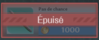
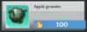
Il ne faudra pas oublier d'équiper la canne et les appâts via le menu équiper.
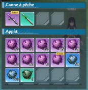
Avant de pêcher il vous faudra faire une petite vérification des poissons, afin de savoir ce qui est le plus rentable à farm selon le prix et la rareté du poisson, et voir si un banc de poisson est disponible.
Une fois cela fait, vous êtes enfin prêt à partir à la pêche.
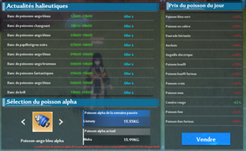
Ici nous avons farm l'anchois, car c'est un poisson violet et celui-ci est chère.
Voici la liste des poissons et la rareté:
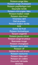
Du coup vu que nous avons notre poisson à farm, je regarde donc sur la map ou est mon poisson.
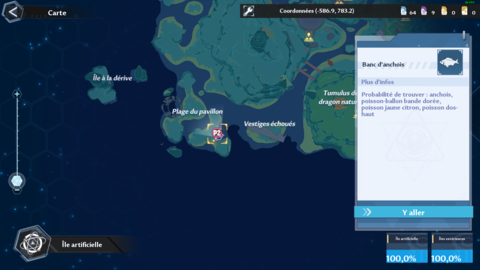
Je me rends donc sur place, et je me positionne face au banc de pêche.
A savoir que si vous disposez de 2 collègues, et de l'éveil de Meryl vous pouvez faire la technique suivante pour facilité la pêche.
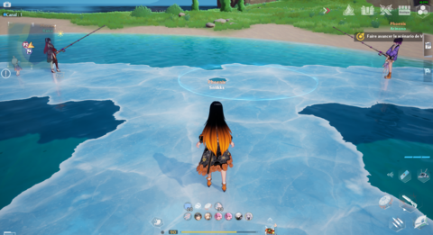
Pour pêcher, il n'y a plus qu'à cliquer sur le logo: canne à pêche
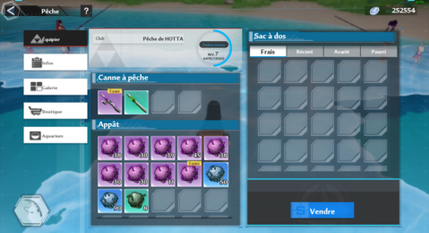
Une fois que le poisson aura mordu à l'hameçon, il faudra que fassiez en sorte d'avoir la barre rouge du milieu dans le rectangle orange.
Il faudra que l'endurance du poisson soit à 0 pour que vous puisez le faire remonter, sans que votre fil de pêche ne casse avant.
A savoir que si vous avez une meilleure canne à pêche, votre fil de pêche sera plus résistant. Mais il faut savoir qu'en fonction de la rareté mais aussi du poisson, celui-ci sera plus endurant.
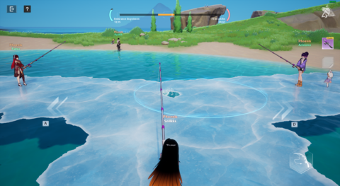
Il faudra aussi adapter l'appât en fonction du poisson, une fois que vous aurez plus de pièce. Plus l'appât est meilleur, plus le poisson le sera (il y'a aussi le facteur chance à prendre en compte)
A savoir que vous avez 350 appâts maximum par semaine à acheter. Il faut donc penser à acheter les appâts même si vous n'avez pas l'intention de faire de la pêche pour le moment/si vous n'avez pas le temps.
N'oubliez pas de vendre vos poissons car il y'a un système de péremption qui influencera le montant de la vente du poisson.
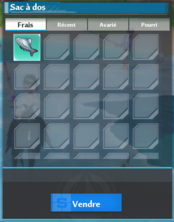
Chaque semaine vous pouvez acquérir une matrice, il vous faudra 150 000 pièces (mais il faudra atteindre le niv 9 au préalable).
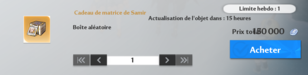